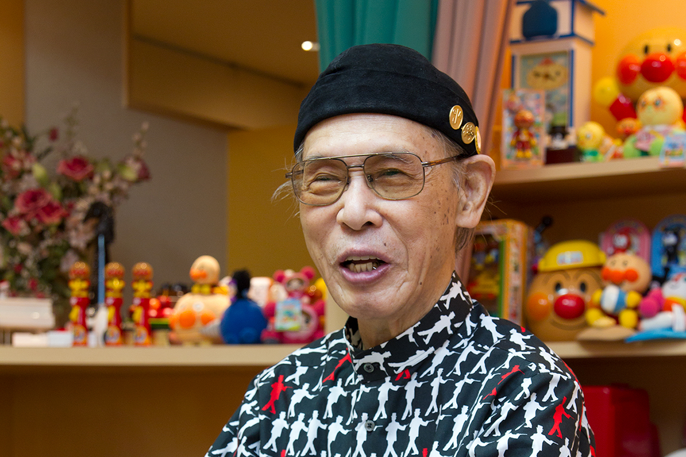
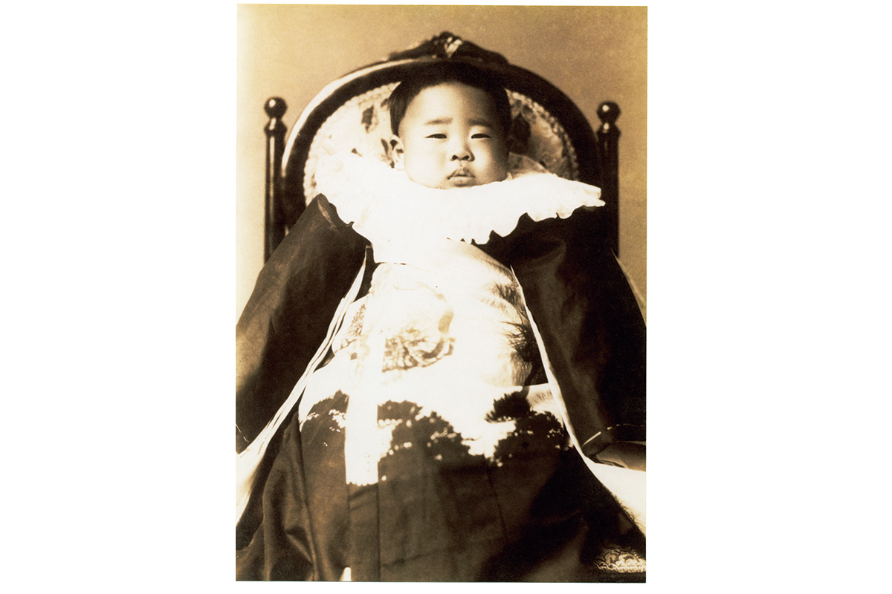
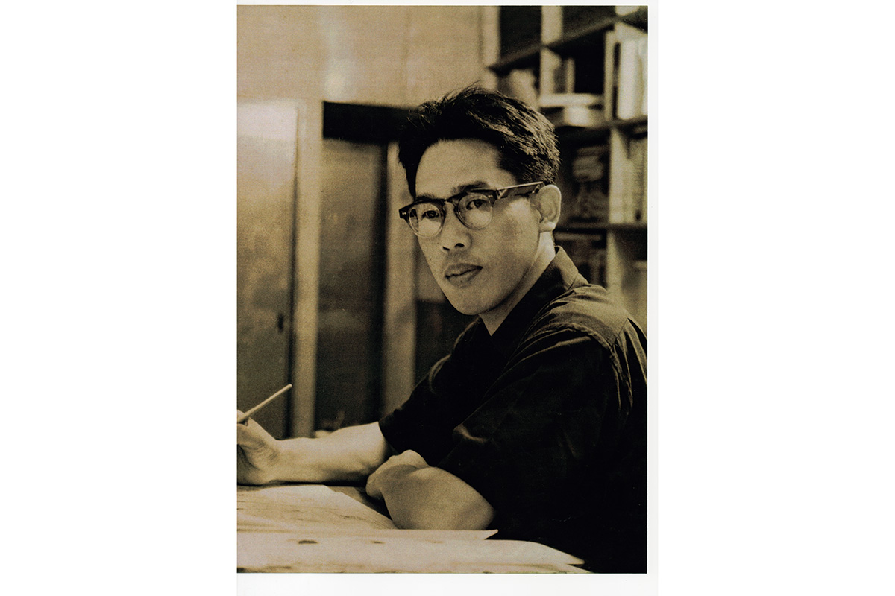
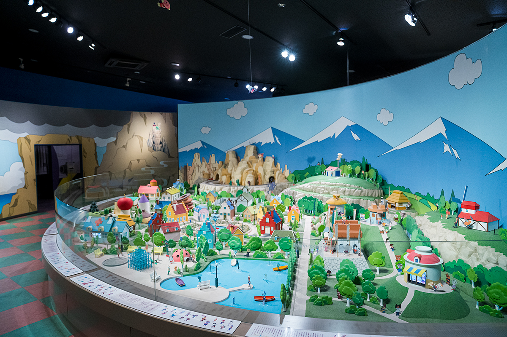
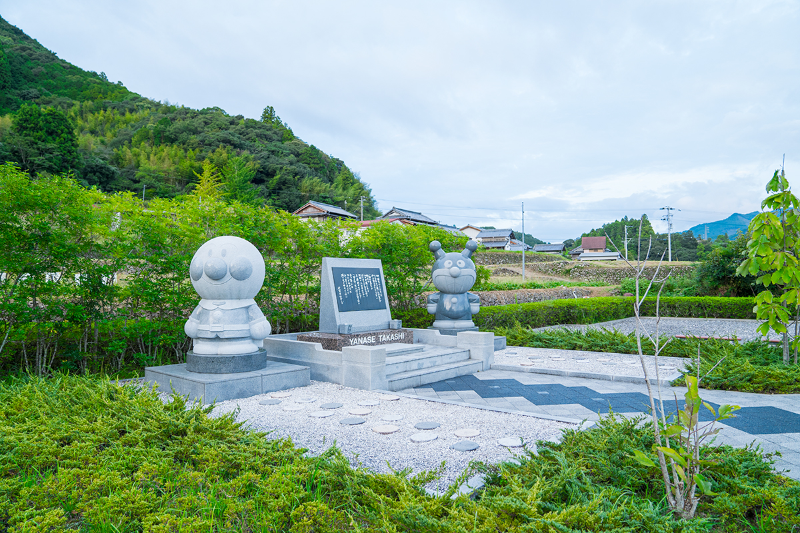

Префектура Коти · восток префектуры · человек и его родина
Такаси Янасэ: родина Анпанмана на востоке Коти

Анпанмана знают все, а его автор родился и вырос в горах восточного Коти. Такаси Янасэ берёг верность этим местам всю жизнь, и сегодня сюда едут, чтобы пройти по его биографии и увидеть небо, которое он называл родным.
Биография
Художник из этих гор
Такаси Янасэ (1919–2013) был художником комиксов, поэтом, дизайнером и автором книжек с картинками. При рождении его имя записали иероглифами, а для псевдонима он взял то же имя, записанное азбукой. Больше всего его знают по Анпанману, герою с круглой булочкой вместо головы, который сначала появился в детской книжке, а потом шагнул на экран.

Он родился в 1919 году в Коти, в семье выходцев из деревни, которая сегодня входит в город Ками. Часть детства прошла в Токио, но после смерти отца мать вернулась с ним в Коти. Вскоре она вышла замуж снова, и мальчика отдали в дом дяди в городе Нанкоку, где уже жил его младший брат. О летних каникулах, которые братья проводили в горах и на реках Ками, Янасэ позже написал книгу воспоминаний о брате, погибшем на войне.
Рисовать он любил с детства. После войны уехал в Токио и устроился дизайнером в универмаг, а сам всё это время мечтал о карьере художника комиксов. Самостоятельным он стал в 34 года и работал не только в комиксах: писал стихи, книги для детей, тексты песен, редактировал издания. Но главного произведения у него долго не было, и это его тревожило.

В 54 года он выпустил книжку «Анпанман», и она понравилась детям. После выхода мультфильма герой стал знаменит на всю страну. Янасэ работал дальше, а после девяноста лет начал подумывать об отдыхе. Но случилось землетрясение на востоке Японии, и его песня «Марш Анпанмана» так тронула людей, что заявки на неё пошли на радио и телевидение одна за другой. Узнав об этом, он отменил уход, помогал пострадавшим и продолжал рисовать до самой смерти в 94 года.
Музей в городе Ками, который сегодня носит его имя, он успел открыть в 77 лет. В залах собраны его картины, стихи и большие полотна, а фасад здания сделан стеклянным, и внутрь льётся солнечный свет. Сотрудница музея рассказывает, что отсюда видно те самые горы и высокое небо, которые Янасэ любил: «Когда в синем небе плывёт облако, понимаешь, что вот он, пейзаж, из которого вышел Анпанман».
Хроника
Девяносто четыре года
- 1919 год. Родился в Коти, в семье выходцев из здешних мест.
- 1924 год. Отец умер в Китае, куда уехал на заработки. Сын живёт с матерью в городе Коти.
- 1926 год. Мать выходит замуж снова, и мальчика отправляют в дом дяди в городе Нанкоку.
- 1937 год. Поступает в Токийскую высшую школу искусств и ремёсел, будущий инженерный факультет университета Тиба.
- 1941 год. Его призывают в армию, в город Кокура в префектуре Фукуока.
- 1946 год. Возвращается с фронта, приезжает в Коти и узнаёт о гибели брата. Идёт работать в газету «Коти», где знакомится с будущей женой.
- 1947 год. Уезжает в Токио и поступает в универмаг «Мицукоси»; участвует в работе над подарочной бумагой «Хана хираку», которую придумал художник Гэнъитиро Инокума.
- 1949 год. Женится.
- 1953 год. Уходит из универмага и становится самостоятельным художником.
- 1961 год. Пишет слова песни «Ладони к солнцу» (музыку написал Таку Идзуми).
- 1973 год. Становится главным редактором поэтического альманаха; в детском издании печатают книжку «Анпанман».
- 1988 год. На телевидении начинается мультсериал «Вперёд, Анпанман!».
- 1996 год. Открывается музей Такаси Янасэ в городе Ками.
- 2013 год. Умирает в 94 года. Его хоронят вместе с женой в парке Хоноки в городе Ками.
- 29 марта 2025 года. Музей открывается заново после реконструкции.
- 31 марта 2025 года. Начался показ сериала «Анпан» о супругах Янасэ.
Где увидеть
По местам Янасэ
В городе Ками две точки связаны с художником напрямую: музей его имени и парк на месте дома, где жила его семья.


Музей Такаси Янасэ
- Адрес
- префектура Коти, город Ками, Кахоку-тё, Мирабу, 1224-2
- Телефон
- +81 887-59-2300
- Часы работы
- 9:30–17:00 (вход до 16:30)
- Выходные
- вторник (если праздник, то следующий день)
- Цены
- взрослые 1 200 иен, старшеклассники 500 иен, дети с 3 лет 300 иен
Парк Хоноки
- Адрес
- префектура Коти, город Ками, Кахоку-тё, Хоноки, 405
- Часы работы
- круглосуточно
- Выходные
- нет
- Цены
- бесплатно
Фото: студия Янасэ.